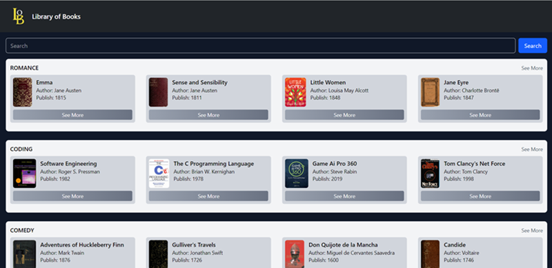
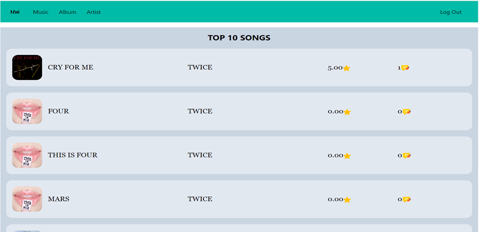

ABOUT ME
Evan Febrian
evanpersia0224@gmail.com


Bachelor's degree in Informatics from Universitas Teknologi Digital Indonesia, with a strong foundation in software development, data structures, algorithms, and database management. Experienced in designing and building web applications, with a keen eye for writing clean, functional, and efficient code.
EDUCATION
Universitas Teknologi Digital Indonesia
Information Technology
Informatics
GPA : 3.86
September 2022 - February 2026
SMA Negeri 2 Waingapu
Natural Science
June 2019 - Mei 2022
EXPERIENCE
Assistant Lecturer - Database System
Indonesia Digital Technology University
• Guided students in understanding database concepts through practical SQL and database design
exercises.
• Supported students in resolving query errors and breaking down relational database principles.
• Reviewed student assignments and coding practices, ensuring adherence to clean code principles and
database standards.
September 2025 - January 2026
Assistant Lecturer - Algorithms And Programming
Indonesia Digital Technology University
• Helped students apply theoretical knowledge through hands-on HTML, CSS, and JavaScript exercises.
• Assisted students in troubleshooting code errors and explaining fundamental concepts of client-side
web development.
• Evaluated student assignments and coding practices, ensuring they follow clean code principles and web
standards.
September 2025 - January 2026
Assistant Lecturer - Web Client Programming
Indonesia Digital Technology University
• Guided students in applying algorithm logic and programming fundamentals through hands-on
exercises.
• Helped students identify and resolve code errors while clarifying core concepts of logic and
algorithms.
• Assessed student assignments and coding practices, ensuring they meet clean code principles and
programming standards.
March 2025 - July 2026
CERTIFICATE

Dicoding
BackEnd Pemula Dengan JavaScript

Dicoding
Dasar Pemrograman JavaScript

Dicoding
Cloud Practitioner Essentials

Dicoding
Dasar Visualisasi Data

Dicoding
Dasar Manajemen Proyek
PROJECT

Library Of Books
This is a Progressive Web Apps that allow users to search book by the
title
using the Open Library api
This website made to fullfil college class assignment
Made with HTML, Tailwind, SwiperJS, And JQuery

Muse Music
This is a website project that allow users to do review songs by giving rating and comment. This project consist of two types of users, which is user and admin. Made with Code Igniter 4 and Tailwind.
Visit Repository